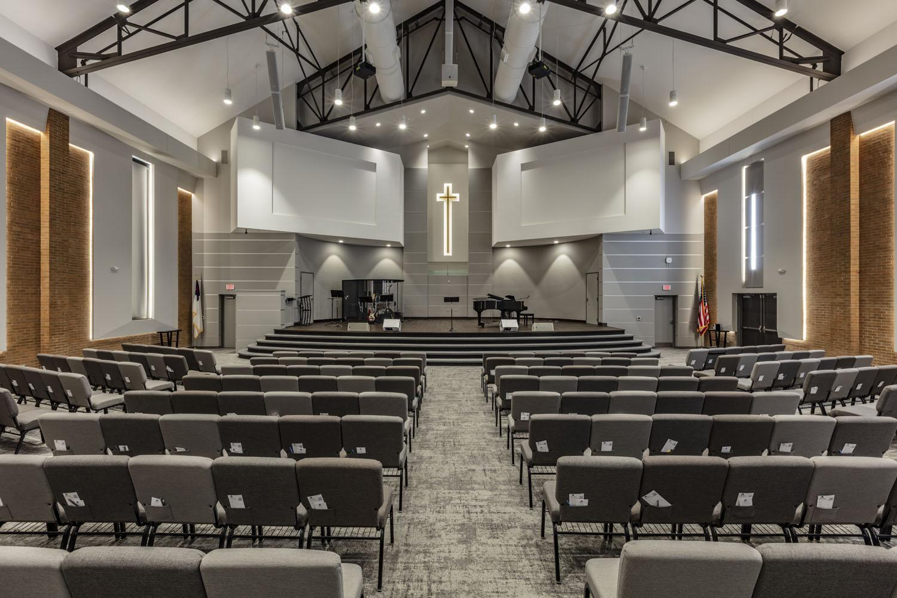

BEM-VINDO À IGREJA BATISTA BETEL
Uma igreja vivendo o Evangelho.
Uma família vivendo para Cristo.
Um lugar para crescer na fé, viver em comunhão e conhecer mais profundamente a Jesus Cristo.

IGREJA BATISTA BETEL
Santo Antônio de Jesus — BA
QUEM SOMOS
Uma comunidade de fé, amor e propósito.
Somos uma igreja que busca viver o Evangelho de Jesus Cristo por meio do ensino da Palavra, da comunhão e do discipulado.
Cremos na importância de caminhar juntos, fortalecer famílias e compartilhar o amor de Deus com a nossa comunidade.
Conheça nossa história
O CENTRO DE TUDO
Jesus Cristo.
“Eu sou a ressurreição e a vida; quem crê em mim, ainda que esteja morto, viverá.”
João 11:25 Conheça Jesus
NOSSA LIDERANÇA
Servindo com amor e fé.
Conheça aqueles que caminham conosco, dedicando suas vidas ao cuidado da igreja e à proclamação do Evangelho.

Iran e Rosa
Nossa liderança
Samuel e Patrícia
Nossa liderança
Neilton e Penha
Nossa liderança
Alan e Damares
Nossa liderança
Nei e Marina
Nossa liderança
Daniel e Ane
Nossa liderança
PROGRAMAÇÃO SEMANAL
Nossos Cultos e Encontros
Momentos de adoração, ensino e comunhão para você e sua família.
Escola Bíblica
Estudo e aprofundamento na Palavra.
Culto de Celebração
Adoração e pregação da Palavra.
Momento de Oração
Um tempo de clamor e intercessão.
Culto da Família
Comunhão e fortalecimento das famílias.
VENHA NOS CONHECER
Você é nosso convidado.
Será uma alegria receber você e sua família. Venha viver momentos de fé, comunhão e adoração conosco.
Igreja Batista Betel
Santo Antônio de Jesus — BA